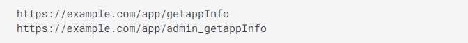

Allows an unauthorized user access to restricted resources.
Allow an attacker to obtain access to sensitive data like passwords, credit card numbers, health records, personal information.
Occurs when untrusted user data is sent to the web application as part of a command or query.
Various risks that arise from ignoring design and architectural best practices, starting from the planning phase before actual implementation.
Occurs when security settings are not adequately defined in the configuration process.
Third-party libraries or frameworks used in web applications that have known vulnerabilities or are no longer supported by their developers.
Occur when a user’s identity confirmation, authentication, or session management is not implemented appropriately.
Occur when critical data and software updates are added to the delivery pipeline without verifying their integrity.
Insufficient logging, detection, monitoring.
Occurs when a web application proceeds to fetch data without first validating user-supplied URL.